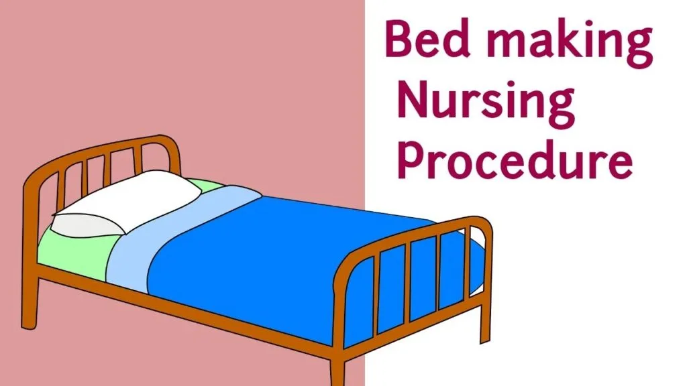

Expanded Nursing Uganda Explanation
Bed making should be reviewed through safe maternal and newborn assessment, early recognition of danger signs, respectful communication and timely referral. Connect the definition to vital signs, bleeding, fetal or newborn wellbeing, patient education and local protocol requirements.
Contents, 21 sections (tap to expand)
01 Topic: Demonstrate bed making (PEX 1.4.1 - 1.4.9)
BED MAKING Bed making is a key nursing skill that is essential for the promotion of patient care, comfort, hygiene and wellbeing.
Bed making requires technical and practical skills and consideration should be given to issues of safety, moving and handling and infection control practices.
There are many types of beds to suit the different conditions of the patient.
Two nurses should work together to make a bed and should face each other. Work from top to bottom of the bed except when putting on a counter pane (bed cover.)
02 Purpose of Bed Making
- To keep the ward neat and tidy .
- To keep/make the patient comfortable .
- To prevent cross infection and complications such as bed sores.
- For treatment of certain conditions e.g. shock or quickening of healing of the patient.
03 Rule of Bed Making
- All equipment should be collected before starting the procedure.
- Any conversation during bed making should not be on personal matters between the nurses but should be focused on the patient.
- Close adjacent windows to protect the patient from draught on a cold day.
- Patient must never be exposed, screen the bed and close the ward to visitors .
- The bed should be made free from crumbs and creases , so as to give maximum comfort to the patient.
- Sheets have to be smooth and when tucking in, MITRE the corners .
- Pillows and other bed accessories should be well arranged to give support and comfort where necessary.
- When pillows are being shaken, the nurse should turn away from the patient and not over the patient.
- The bed should be made in a way suitable for treating certain conditions such as shock and to prevent complications as a result of bad nursing.
- Always use clean beddings and linen for each patient.
- Always wash hands after making beds of infectious or septic patients before moving to the next bed.
- Do not put any linen of another patient to the next patient’s bed.
- If linen is dropped on the floor, it should not be used.
- Always have a dirty linen container or hamper at hand in which to put dirty linen, never put it on the floor or carry the across the ward to prevent cross infection.
- The patient’s face should not be covered with sheets or blankets.
- The open end of a pillow case should face away from the main door or entrance of the ward.
- Two nurses are required and they should work in harmony avoiding unnecessary movements of the bed and themselves.
- Extra assistance should be available and if necessary, one should be called upon to help lift the patient.
- Do not make a bed when a sterile procedure is in progress in the ward.
- Beddings from the infectious patients should first be soaked in a disinfectant e.g. jik (3.5%=3.5/0.5-1=6) 1.6,(6%=6/0.5-1=11)1.11 for 24 hours before washing.
- Use large mackintoshes for incontinent patients to protect the beddings.
- Use small mackintoshes at the head of the bed for unconscious or post operative patients.
- Use a bed cradle over leaking wounds e.g. in burns.
- Beds should be made in such a way that the patient can be put in without difficulty.
- Allow room for the patient’s feet for free movement or turning when placing the top sheet over the patient.
- Always wash hands before and after bed making.
04 Types of Beds
- Unoccupied bed/hospital bed
- Occupied bed
- Admission bed
- Admission bed for burns
- Operation/post-operative bed
- Bed for complete rest
- Cardiac bed
- Divided bed
- Plaster and fracture bed
05 Appliances Used in Bed Making
- Mackintosh/plastic sheet: Protects the beddings during procedures. Protects the beddings in case of vomitus, urine, blood, faeces from soiling the bed sheets and the mattress.
- Hot water bottles: To provide added warmth to the patient. The hot bottles must always be covered and the cover tight enough before use. Never place it directly on the patient’s skin to avoid burns.
- Bed cradle: To keep the weight of the bed sheets away from the patient’s affected area e.g. in burns.
- Bed blocks/bed elevators: To elevate the top or bottom of the bed e.g. in patients with shock, cardiac problems etc. To promote drainage in case of chest drainage.
- Backrest/bed rest: To help the patient sit up-right for those with chest problems (breathing difficulties), cardiac problems etc. different degrees of elevation can be made with pillows placed on top of the backrest.
- Sandbags: To prevent movement of limbs in the treatment of some conditions like fracture of the limbs.
- Air rings: These are place under the buttocks to relieve pressure so as to prevent bed sores.
- Foot rest: A small piece of wood or cloth rolled neatly at the foot of the bed for the patient to support his/her feet in-order to prevent slipping/falling down the bed.
- A cardiac table: It is the table place in front of the patient over the bed for meals, medicine or any leisure activity e.g. a magazine newspaper or work etc. it is used in patients with cardiac conditions in cardiac bed.
- Fracture boards: To make a firm surface for support and it is placed across the bed springs under the mattress.
06 Prepare and Make an Unoccupied Bed (PEX 1.4.1)
Is an empty bed and is fully covered with a counter pane to protect it from dust and dirt while waiting for the new patient for admission.
Purpose:
- To protect the bed from dust and dirt
- To keep a ready bed for the admission and emergency.
- To give the room/ward a neat and tidy appearance .
Requirements: trolley
Items on the trolley:
- Spring cover
- 2 bed sheets
- 1 mackintosh/draw mackintosh
- 1 ground mackintosh
- 1 draw sheet
- 1 pillow and pillow case
- 1 blanket
- 1 bed cover/counter pane
Items in the ward:
- 2 chairs/stools for stripping the bed
- A dirty linen container/hamper
- Hospital bed
- Mattress and mattress cover
Appliances needed for the unoccupied bed:
- Foot rest
- Bed blocks
- Bed cradle
- Fracture board
Procedure:
- Collect 1 st all the requirements needed.
- Bring always the hamper with you.
- Clear the room 1 st of unnecessary equipment e.g. kidney dishes, bed pans and the belongings of the patient or from the family.
- Pull the bed from the wall.
- Place the 2 chairs at the foot of the bed.
- Wash hands.
- Turn the mattress to see whether the spring cover is straight or complete springs (not broken.)
- Replace the ground mackintosh then the bottom sheet and start to tuck in from the top (see that the right side is up). Mitre the corners, tuck in at the bottom and then the sides.
- Replace the mackintosh/draw mackintosh, put at the height of the patient’s buttocks. Place the draw sheet covering the mackintosh completely.
- Put on the top sheet, tuck in the bottom, mitre each corner and leave the top free.
- Place the blanket on the bed then turn back the blanket and top sheet on top of the blanket.
- Replace the pillow(s) to the bed (open ends away from the entrance) after shaking them.
- Put the bed cover to the bed, tuck in the bottom only, mitre corners and leave the sides hanging down but make sure it is covering the whole bed.
- Push back the patient’s bed to the original position.
- Clear away and wash hands.
- Document the procedure and replace the equipment to their place of storage.
07 Demonstrate Stripping and Changing of Patient Linen (PEX 1.4.2)
STRIPPING THE BED This means undressing the bed or removing the bed linen from the in preparation to lay/make afresh.
Requirements: trolley
- As for the unoccupied bed (requirements list above).
Procedure:
- Collect 1 st all the requirements needed.
- Bring always the hamper with you.
- Clear the room 1 st of unnecessary equipment e.g. kidney dishes, bed pans and the belongings of the patient or from the family.
- Pull the bed from the wall.
- Place the 2 chairs at the foot of the bed.
- Wash hands.
- Un-tuck all the beddings first.
- Take away the pillows and undress.
- Fold the bed cover, blanket, top sheet in three, the bottom part should be on top and put on the chairs provided one by one. Fold the draw sheet and mackintosh, put on the chairs. Bottom sheet is also folded in three, bottom part 1 st as the top will be tucked in first when putting it on again.
- Remove the ground mackintosh by rolling if off the bed and put to the chairs.
- Re make the bed as required (refer to procedures for occupied or unoccupied bed).
08 Prepare and Make an Occupied Bed (PEX 1.4.3)
OCCUPATION BED Is a suitable, comfortable and appropriate bed for hospitalized patients. It is made as usual and one corner of the linen is folded back at 90° to let the patient in.
Open bed: Patient is allowed out of bed.
Purpose:
- To provide clean bed
- To provide comfort to the patient.
Requirements: trolley
- The requirements needed are as for the hospital bed/unoccupied bed
- In addition: gloves
Procedure:
- Collect all the equipment needed.
- Explain the procedure to the patient.
- The patient is allowed out of bed when able.
- Pull the bed from the wall.
- Wash hands thoroughly and put on gloves.
- Strip the bed and replace with clean linen.
- The bed is made in the same way as the unoccupied bed except for the bed cover. Fold 1 st the blanket, then put the bed cover over the blanket and fold the top sheet back over the bed cover.
- Fold half of the beddings back in a corner of 90° at the side of the locker, so that it is easy for the patient to get into the bed.
- Push back the patient’s bed to the original position.
- Clear away and wash hands.
- Document or record the procedure.
09 Prepare and Make a Closed Bed (with patient in bed)
With the patient in bed/closed bed The bed is made with the patient in, for a patient who is not able to get out of bed. It is usually done by two nurses.
Purpose:
- To provide comfort to the patient
- To change the soiled bed linen .
Requirements: trolley
- As for the unoccupied bed
- In addition: gloves
Procedure:
- Collect the equipment needed.
- Explain the procedure to the patient.
- Screen the bed and close adjacent windows for privacy.
- Pull the bed from the wall.
- Wash hands thoroughly and put on gloves.
- Place 2 chairs at the foot of the bed.
- Remove all the pillows except one for the patient to rest his head.
- Loosen the beddings on all sides and then strip the bed.
- Turn the patient on his left, placing one pillow under his head. The nurse towards the side the patient is facing should support the patient so that he does not feel afraid of falling down.
- Roll the draw sheet and mackintosh to the center of the bed near the patient’s back.
- If the bottom sheet needs changing, roll it to the center of the bed near the back of the patient.
- Place the clean bottom sheet to halfway the bed over the mattress. Make sure that the middle fold is in the middle of the bed. Tuck the head end first, mitre the corner at the top, bottom and then sides.
- Bring back the mackintosh and draw sheet if clean, tuck them under the mattress.
- Turn the patient on his right side, placing one pillow under his head, the nurse towards the side the patient is facing should support the patient.
- The 2 nd nurse removes the soiled linen and puts the linen in the dirty linen container. Straightens out the bottom sheet, mackintosh, draw sheet and tuck them separately and firmly. Mitres the corners beginning from top then bottom and sides.
- Turn the patient back to the center of the bed and support him whilst his pillows are plumped and arranged. Position the patient comfortably.
- As soon as the top sheet has been replaced over the patient, the sheet or blanket covering him may be removed and replace the top bed clothes.
- Ensure that the bed clothes are loose enough over the patient’s feet. A bed cradle may be used to support their weight if needed but in the absence of this, the patient is asked to cross one foot over the other whilst the bed is being made, ensuring plenty of room for his feet.
- Push back the patient’s bed to the wall/original position.
- Replace the patient’s locker and open the windows.
- Clear away and wash hands.
- Document the procedure.
10 Prepare and Make an Admission Bed (PEX 1.4.4)
ADMISSION BED FOR NEW PATIENTS The bed is made for the newly admitted patients. It contains the pack that can be lifted off the bed or fixed on one side.
Requirements: trolley
- As for the hospital bed
- Additional: 2 admission sheets
Procedure: Admitting the patient in a clean bed
- Collect the equipment needed.
- Pull the bed form the wall.
- Wash hands thoroughly.
- Place the 2 chairs at the foot of the bed.
- Turn the mattress to check the springs and spring cover.
- Place the bottom sheet, mitre corners from top to bottom.
- Add the mackintosh and draw sheet, tuck in firmly the place the bottom admission sheet, mitre corners from top to bottom and tuck in the sides.
- The top admission sheet is placed over the admission bottom sheet and left hanging. The other top sheet and blanket are added on top of the admission sheets and then the bed cover.
- Turn back the bed cover, blanket and the two top sheets to make a pack. Tuck one side or don’t, roll the beddings to the other side while the top admission sheet is rolled together to the pack.
- Push the bed back to its original position.
- Place the chair at the top side of the bed and put the pillow whilst waiting for the patient.
- On completion, clear away and wash hands.
- Document the procedure.
N.B:
- Admit the patient between the admission sheets.
- Cover the whole bed with a bed cover if the patient is not yet admitted to prevent dust and dirt.
- Remove the admission sheets after the bed bath has been given to the patient.
11 Prepare and Make Bed for Burns (PEX 1.4.6)
ADMISSION BED FOR BURNS It is the bed made for new patient with burns only.
Requirements: trolley
- As for the unoccupied bed
- Additional: 2 old sheets and if possible sterile sheets
- Mackintosh pillow cover
- A mosquito net
- Bed cradle
- Bed locks
- At the bedside: Infusion stand.
Procedure:
- Collect all the equipment needed.
- Pull the bed from the wall.
- Wash hands thoroughly.
- Place the 2 chairs at the foot of the bed.
- Make as an admission bed instead of admission sheets, use old or sterile sheets and make a pack.
- Cover the pillows with the mackintosh covers before putting on the pillow cases.
- Push back the bed to the original position.
- Put/hang the mosquito net to protect the patient from flies.
- Place the bed cradle over the affected area to relieve weight of the beddings over the affected part.
- Bed blocks are used to elevate the foot of the bed if the patient is in shock.
- If the patient is bathed on admission, the sheets are removed when it is completed. If patient is still in shock or the burns are extensive, then the sheet should be left until the patient has recovered from shock and the admission bath is then given.
- Clear away and wash hands.
- Document the procedure
12 Prepare and Make Post-Operative Bed (PEX 1.4.7)
POST-OPERATIVE BED This bed is prepared to receive the patients who have undergone surgical procedures, recovering from the effects of anesthesia.
Purpose:
- To place the patient in bed with minimum discomfort .
- To make a comfortable and safe bed for the patient who is recovering from the effects of anesthesia.
- To prepare to meet any emergency .
Requirements: trolley
- As for the unoccupied bed
- Additional: A small mackintosh and towel.
- Be elevator
- Emergency tray (mouth gag, air way piece, tongue depressor, drugs (e.g. adrenaline), swabs)
- Hot water bottles
- At the bedside: Infusion stand.
- On the locker: Post-operative observation tray (BP machine, stethoscope/pulsometer or watch, thermometer and observation chart.)
Procedure:
- Collect all the equipment required for the procedure.
- Pull the bed from the wall.
- Wash hands thoroughly.
- Place the 2 chairs at the foot of the bed.
- Strip the bed in the usual way.
- Put all the dirty linen into the hamper.
- Make a clean bed with clean linen, making it as the hospital bed but with a pack which can easily be removed when lifting the patient onto the bed.
- Instead of the pillows, put the small mackintosh and towel across the top of the bed and tuck in at the top.
- Push the bed back to the wall.
- Put the pillow(s) on the chair/stools, which will be used later when the patient recovers.
- Clear away and wash hands.
- Document the procedure.
13 Prepare and Make a Cardiac Bed (PEX 1.4.5)
CARDIAC BED Is used to help the patient to assume a sitting up position; which can afford him great comfort with least strain. Cardiac bed is used for patients with heart diseases, those with dyspnoea to provide easy breathing.
Purpose:
- To relieve dyspnoea
- To assist recovery of the patient
- To provide comfort and prevent complications
Requirements: trolley
- As for the unoccupied bed
- Additional: Back rest
- At least 4-6 pillows and pillow cases
- Air cushion/air ring and cover if required
- Bed blocks
- Sand bags and cover/foot support i.e. small board, a pillow, rolled cloth etc; may be necessary to support the feet
- Cardiac table
- On the locker: Sputum mug, a bell: so that the patient can reach it easily.
Procedure:
- Collect the equipment needed.
- Wash hands thoroughly.
- Place the 2 chairs at the foot of the bed.
- Prepare the bed as the open bed with the patient but in a sitting up position.
- When making the bed, take care to see that the patient’s shoulders are covered if possible. It is better to use a bed jacket or shawl or a small blanket - the bed clothes will be restricting.
- Place the back rest and pillows so as to support the patient in upright position and use a bed elevator or bed blocks to prevent the patient from slipping down the bed.
- Place sandbags/board/small pillow/rolled cloth against the feet where necessary as foot support.
- Push the bed back to its original position.
- Place the cardiac table over the bed for the patient to use whilst reading or performing any tolerable activity.
- Clear away and wash hands.
- Document the procedure.
14 Prepare and Make a Divided Bed (PEX 1.4.8)
DIVIDED/AMPUTATION/STUMP BED The bed is used for the patients who have had an amputation of the leg or have had a fractures lie in extension or for pelvic examination or treatment. It is commonly used for patients whose leg(s) has been amputated in order to keep the stump visible and elevated.
Purpose:
- To keep the stump in a good position .
- To help in the observation of the stump for bleeding constantly and apply tourniquet instantly if necessary.
- To ensure safety and comfort to the patient by preventing soiling and staining of the linen.
- To prevent jerking movements of the amputated leg, causing complications
Requirements: trolley
- As for the unoccupied bed
- Additional: 1 sheet
- 1 blanket
- 2 sandbags and covers
- Mackintosh and dressing towel
- Tourniquet and towel, only if ordered by the doctor in charge of the case.
- An emergency dressing trolley
- Bed cradle
Procedure:
- Collect the equipment needed for the procedure.
- Pull the bed from the wall.
- Wash hands thoroughly.
- Place the 2 chairs at the foot of the bed.
- Make the bed in two halves; across the middle or for the amputation bed at the level of amputation. The top half having a sheet, blanket and counter pane and then the bottom half having a sheet and the blanket. This may be too hot for the patient at day time, so the top blanket may be omitted. At night, however it is much colder and both blankets may be needed.
- On completion push back the bed to its original position.
- Clear away and wash hands.
- Document the procedure.
15 Prepare and Make a Fracture Bed (PEX 1.4.9)
PLASTER AND FRACTURE BEDS Is used for a patient with fracture of the trunk or extremities to provide firm support by use of a fracture board placed under the mattress. Fracture bed is a hard firm bed designed for the patient with a fracture particularly of the spine, pelvis or femur.
Purpose:
- To make the patient comfortable .
- To maintain the position and give support to the fracture.
- To aid in immobilizing the fracture.
- To prevent unnecessary pain .
Requirements: trolley
- As for the unoccupied bed
- Additional: Fracture board
- Bed cradle
- Sandbag with cover
- Extra pillows (at least 3)
Procedure:
- Collect the equipment needed.
- Pull the bed from the wall.
- Wash hands thoroughly.
- Place 2 chair at the foot of the bed.
- This bed is made as the occupied bed.
- The fracture boards are made the same width as the bed, and their purpose is to make a firm surface for placed support. They are place across the bed springs under the mattress.
- Put the bed cradle over the affected part, so as to lift the weight of the beddings from the patient.
- Push back the bed to the original position.
- Clear away and wash hands.
- Document the procedure.
16 TO CHANGE THE BOTTOM SHEET FROM SIDE TO SIDE
This method is used for changing the bottom sheet for most patients in the hospital especially those not able to move out of bed.
Requirements: trolley
- 1 air ring and cover
- 1 draw sheet
- 1 draw mackintosh
- A tray for treating pressure areas may be required
- 1 sheet
- Gloves
At the bedside:
- 2 stools/chairs
- Hamper
- Screen
Procedure:
- Collect all the equipment needed.
- Explain the procedure to the patient.
- Bring the equipment needed to the bedside.
- Close the windows if necessary. Screen the bed if the ward is not closed.
- Pull the bed from the wall.
- Place the stools/chairs at the foot of the bed.
- Wash hands thoroughly and put gloves.
- Place the clean linen on the stools/chairs at the foot of the bed and the hamper besides the chairs/stools.
- Fold the clean sheets across the width in three or roll them for easy placement.
- Strip the top bed clothes as usual, leaving the sheet covering the patient on a hot day or a blanket and sheet on a cold day. Back rest and air ring, foot support are also removed.
- Both nurses lift the patient carefully down the bed off the draw sheet.
- One nurse supports the patient, while the other removes the draw sheet and mackintosh, and then rolls the soiled bottom sheet down as far as the patient’s back and straightens the mattress cover and ground mackintosh.
- The same nurse puts in the clean sheet, tucking it at the top and on her side as far as the dirty linen. She then puts in the draw mackintosh and draw sheet, tucks on her side. Replace the backrest, pillows and air ring. Treat pressure areas if necessary.
- Both nurses lift the patient back up the bed and make sure that the pillows are comfortable. Then tuck in the mackintosh and draw sheet, top side of the bottom sheet on the second side.
- Draw the soiled sheet to the bottom of the bed from under the patient’s legs and put it in the hamper.
- With the hand, brush any crumbs and creases from the mackintosh if present and the mattress and straighten them both. Pull the clean sheet down to the bottom of the bed and tuck in, mitre corners.
- Put on the top bed clothes as usual, make the patient comfortable.
- Push back the bed to its original position.
- Clear away, remove the gloves and wash hands.
- Document the procedure.
NB. Some means should be used to prevent the patient in this position from slipping down the bed. This may be achieved by putting a sand bag or a pillow (with mackintosh cover) against the feet. This will also prevent foot drop or the foot of the bed may be raised on a bed elevator/bed blocks.
17 TO CHANGE THE BOTTOM SHEET FROM TOP TO BOTTOM
This method is used for changing the bottom sheet when the patient is nursed in an upright position and must not be flat e.g. chronic heart disease.
Requirement: trolley
- 1 air ring and cover
- 1 draw sheet
- 1 draw mackintosh
- A tray for treating pressure areas may be required
- 1 sheet
- Gloves
At the bedside:
- 2 stools/chairs
- Hamper
- Screen
Procedure:
- Collect all the equipment needed.
- Explain the procedure to the patient.
- Bring the equipment needed to the bedside.
- Close the windows if necessary. Screen the bed if the ward is not closed.
- Pull the bed from the wall.
- Place the stools/chairs at the foot of the bed.
- Wash hands thoroughly and put gloves.
- Place the clean linen on the stools/chairs at the foot of the bed and the hamper besides the chairs/stools.
- Fold the clean sheets across the width in three or roll them for easy placement.
- Strip the top bed clothes as usual, leaving the sheet covering the patient on a hot day or a blanket and sheet on a cold day. Back rest and air ring, foot support are also removed.
- Both nurses lift the patient carefully down the bed off the draw sheet.
- One nurse supports the patient, while the other removes the draw sheet and mackintosh, and then rolls the soiled bottom sheet down as far as the patient’s back and straightens the mattress cover and ground mackintosh.
- The same nurse puts in the clean sheet, tucking it at the top and on her side as far as the dirty linen. She then puts in the draw mackintosh and draw sheet, tucks on her side. Replace the backrest, pillows and air ring. Treat pressure areas if necessary.
- Both nurses lift the patient back up the bed and make sure that the pillows are comfortable. Then tuck in the mackintosh and draw sheet, top side of the bottom sheet on the second side.
- Draw the soiled sheet to the bottom of the bed from under the patient’s legs and put it in the hamper.
- With the hand, brush any crumbs and creases from the mackintosh if present and the mattress and straighten them both. Pull the clean sheet down to the bottom of the bed and tuck in, mitre corners.
- Put on the top bed clothes as usual, make the patient comfortable.
- Push back the bed to its original position.
- Clear away, remove the gloves and wash hands.
- Document the procedure.
18 Nursing Uganda Clinical Lens
Use Bed making as a practical nursing topic, not only a memorized definition. Translate theory into safe decisions, accountability, communication and service improvement.
- What to understand first: define bed making, identify the normal or expected pattern, then explain what changes when the patient is unwell.
- Why it matters in care: the nurse must recognize risk early, explain findings clearly, document accurately and know when to escalate.
- How to revise it: connect each point to assessment, nursing diagnosis or care problem, intervention, rationale and evaluation.
19 Assessment Guide
- The problem, stakeholders, available resources, policy requirements and ethical issues.
- Risks to patients, staff, confidentiality, quality, costs and continuity.
- Documentation, reporting lines, supervision and evaluation measures.
20 Nursing Priorities, Rationales and Outcomes
- Use evidence, policy and professional standards to guide action.
- Communicate clearly, document decisions and protect confidentiality.
- Evaluate whether the action improves safety, learning or service delivery.
The rationale for these priorities is patient safety: nursing actions should prevent deterioration, reduce discomfort, support recovery and create clear evidence for the next caregiver.
- Expected outcome: The plan is documented, realistic, ethical and improves patient care or learning outcomes.
21 Patient Teaching and Revision Check
- Explain bed making in simple language the patient or caregiver can repeat back.
- Teach warning signs, medicine or follow-up instructions, hygiene or lifestyle points where relevant.
- For exams, prepare a short answer using: definition, causes or risk factors, signs, assessment, management, complications and prevention.
- For ward practice, document baseline findings, actions taken, patient response and the plan for review.
Illustrations and Diagrams (1)

Related Video Lectures
Watch nursing lecture videos on YouTube for this topic. Opens in a new tab.
Watch on YouTubeExternal link: YouTube may use its own cookies and terms. Nursing Uganda is not affiliated with YouTube.